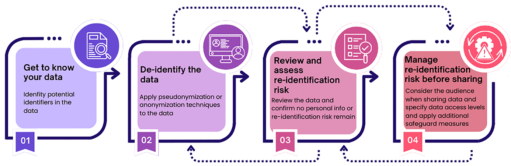

Chapter 3 Principles, concepts and practical considerations
3.1 Data minimization
Data minimization is a key principle of data privacy and involves limiting data collection and retention to only what is relevant, necessary, and adequate to accomplish a given purpose. Collecting only the minimum amount of personal data necessary for your research reduces the threat of data breaches and privacy violations, thereby reducing potential consequences for the research participants.
In line with this principle, a researcher should only collect and retain the personal data that is required for a research study in mind.
Personal data minimization in research can be achieved through:
-
Planning carefully what kind of personal data is necessary for the research purpose.
It is advised to carefully plan this early during the research design phase. For instance, you should not ask for the age of a research participant (data subject) if the age effect is not investigated in the research.
-
Collecting aggregated information if detailed information is not necessary.
For example, if the age range is sufficient for the analysis, you should not collect the actual age of the participant.
-
Limiting open-ended questions in surveys.
Answers to open-ended survey questions provided by respondents occasionally contain personal data about the respondents themselves or other people. Having many open-ended questions in your survey requires more anonymization effort after collecting the data. -
Instructing research participants sufficiently to avoid unnecessary personal data.
In open-ended questions in surveys and during interviews, the participant might mention unnecessary personal information about him/herself or a third person. Adding extra instructions in the survey and reminding the participants not to mention personal data (e.g., other people’s names or addresses) before conducting the interview is well worth the effort. -
Instructing research participants sufficiently to avoid providing unnecessary personal data.
In open-ended questions in surveys and during interviews, the participant might mention unnecessary personal information about him/herself or a third person. Adding extra instructions in the survey and reminding the participants not to mention personal data (e.g., other people’s names or addresses) before conducting the interview is well worth the effort. -
Adjusting the settings of the data collection tool (e.g., survey tools) to avoid collecting unnecessary personal data.
Some survey tools are per default set up to collect personal data such as the location and/or IP address of the user. Always check the settings of the tool you use for data collection.
3.2 Pseudonymisation versus Anonymisation
When personal data are necessary and have been collected for research, research participants’ identities should be protected. Two techniques are used to ensure that research participants remain anonymous and untraceable during and after research- pseudonymisation and anonymization.
Pseudonymisation
Pseudonymisation is a de-identification process after which personal data can no longer be attributed to a specific data subject without the use of additional information. This process is also referred to as coding. It involves creating two separate files, one linking the personal data to the pseudonyms (made-up values/tokens) and another file which contains only the pseudonyms and the supplied research information. The former file is known as a key file or code list and must be kept separately from the latter file.
The key file should be subjected to extra security measures (such as secured storage, password protection and encryption) to ensure that the identities of research participants are protected.
 Anonymisation
Anonymisation
Anonymisation is another de-identification process which involves permanently deleting direct and/or indirect identifiers from the data, such that there is no way to link back to individuals (research participants) and the research information they have supplied. In this case, there is no key file that would permit re-identification as this process is irreversible.
Pseudonymization is employed to protect the identities of research participants by substituting direct identifiers with pseudonyms. This process is reversible and can still allow re-identification.
In contrast, anonymisation involves deleting the identifiers, rendering re-identification impossible, even by researchers themselves. The process is irreversible.
3.3 Practical Consideration
-
Fully anonymized data is not subject to GDPR.
Unlike pseudonymized data, fully anonymized data is not subject to GDPR regulations. However, it is important to note that fully anonymized data can be difficult to achieve.
-
Anonymization is not an absolute value, but a spectrum.
in the following scenarios, data is not considered as anonymized data:
Raw data containing personal data is still present.
Key or other information that can be used to re-identify individuals in the dataset still exist.
-
Documenting the anonymization process.
s a best practice, the process of anonymization should be thoroughly documented for future reference and research transparency. Such documentation tracks all changes, including removals, replacements, aggregations, or generalizations. It should be stored securely and separately from the data files, as it may contain information that could enable re-identification. -
Anonymization can negatively impact data utility.
anonymization can render data unusable for future analysis or reuse. Data utility refers to the data’s ability to address research questions effectively (e.g., if identifying factors essential to the analysis are removed, the data may not support certain types of research). Certain personal details are closely tied to the capacity of addressing research purposes and may not be removed. Therefore, it is crucial to clearly document whether and how anonymization has been performed. -
Balancing anonymization and data utility.
When anonymizing data, it’s essential to balance the protection of data subjects’ privacy with the utility of the data. For example, in a study on student performance and family socioeconomic status, identifiers like student names, gender, and age may be removed to protect privacy, while information on grades and family economic conditions should be retained, as these are critical for addressing the research question. -
Pseudonymization is sometimes preferred over anonymization.
Full anonymization may not always be desirable because it reduces the data utility, such as removing context of data. This could be the case in some research. For instance, longitudinal studies benefit from tracking personal data of the same participants over time; thus, pseudonymization is preferred over anonymization. -
Assessing re-identification risks.
Anonymized data is data from which personal information has been removed to prevent identifying individuals. However, there is are always a risks of re-identification through singling out, inference, or linking with other data or techniques. Therefore, it is recommended to assess re-identification risks carefully before sharing data. Based on this assessment, researchers can also determine the appropriate scope of data recipients.
3.4 How to assess the risks of re-identification
Re-identification risk assessment is the process of evaluating the likelihood that anonymized data could still reveal individual identities through singling out, linking, and inference ICO (2021).
Singling Out: Can an individual be isolated from the dataset?
- Unique Data Points: To assess re-identification risk, check if any data points are unique in combination with other attributes. If a category created by any two attributes (e.g., age and occupation) has only one data point, that data point is unique and poses a re-identification risk. Aim to have at least three data points in each unique category to reduce this risk.
Linking: Can information within the dataset be combined with external data to identify an individual?
Inference: Can details about an individual be inferred, guessed, or predicted based on patterns in the dataset or previous knowledge?
Sample vs. Population Uniqueness: uniqueness in a dataset sample can still mean uniqueness in the broader population and that an increase re-identification risk. For example, a rare disease patient or a specialized surgeon might be unique both in the dataset and in real life, making them identifiable.
External Databases: Consider if other datasets or personal knowledge could identify individuals already exist.
Existing re-identification technology and skills: Assess if techniques and skills exist that could reverse anonymization or link data back to individuals.
Sharing Scope: Publicly shared data poses a higher re-identification risk than data shared with a limited group.
3.5 Steps for anonymisation
The setps for anonymization can be found in the table below UK_Data_Service (2024),PDPC (2022). 
| Steps for anonymization | How to | Questions to consider |
|---|---|---|
|
You can start with identifying potential identifiers in the data, for example direct and indirect identifiers. For an overview of identifiers, please see chapter 2. | What kind of data do you want to anonymize or pseudonymize, such as textual, numerical, audio, video data? Which identifiers exist, direct, strong indirect, or indirect identifiers? |
| 2.De-identify your data by applying anonymization or pseudonymization techniques | You can use different techniques to anonymize or pseudonymize the identifiers in your data. For an overview of different techniques for various research types, please see chapter 4. | When applying anonymization techniques, please be aware that it can have an impact on the data utility as you are removing or modifying data values. Data utility related to attributes that researchers are interested in. How can you retain the data utility but still modify the data to prevent identification? |
| 3.Compute risk | Review the data and confirm no personal data or risk of re-identificatin remain. | Any remaining information in the dataset still sensitive, or unique? To measure uniqueness of a data point, identify the number of data points in each subcategory of the dataset. If there is only one data point in a category, that value is nique, indicating a high risk of re-identification. It is ideal to strive for at least 3 data points in one distinct combination of any two remaining (in)direct identifiers. |
|
Documentation of the de-identification to ensure transparency | Who are the recipients of the data? Are they a specific group or the general public? The broader the range of data recipients, the more stringent the anonymization measures should be. Can any external datasets be linked to yours to potentially re-identify data subjects? For instance, isolated incidences can be linked to the dataset to single out or infer to data subject. For instance, the first person in the moon, or a rare disease in a neighbourhood. Any techniques can enable identification? |